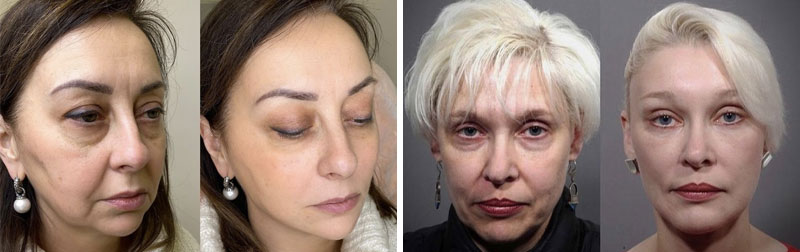
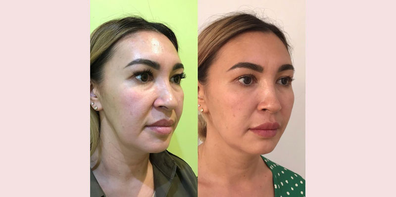

Beauty Routinesчете се за 5 мин.
ФЕЙСЛИФТ
Времето ни променя. Бръчките са все по-дълбоки, а кожата не е толкова гъвкава и сияеща, както преди години. Някои се променят естествено, но мнозинството жени искат да останат млади колкото се може по-дълго. За това се харчат големи суми на редовни посещения при козметолог, купуват се скъпи продукти и най-добрите пластични хирурзи. А ако Ви кажа, че има начин да спрете процеса на стареене по естествен път? Пластичната хирургия не прави по-млади хоата, а ги прави други. Ще ви кажа как да изравните структурата и да стегнете кожата, да премахнете торбичките под очите и да придадете нов вид, като използвате само един инструмент.

В самото начало искам да ви покажа един от хилядите благодарни отзива. Пациентът ми е разказал подробно историята си. Не можех да предам по-добре думите й.
“Когато се покрих с дълбоки бръчки, ме досрамя да нося деколтета, а лицето няма как да го скриеш с дрехи. Кремовете ми спряха да са ефективни, появи се необходимостта да се търсят нови решения на проблемите.
Финанситет ми не ми позволяваха да ходя при козметолог. В интернет започнах да търся най-различни антивъзрастови средства и техники за масаж на лицето. Пробвах най-различни, особено маски собствено производство. Ефект почти нямаше.
В крайна сметка престанах да чета народни съвети и започнах да търся отговора сред специалистите. Така намерих статия, където специалист-козметолог разказа за вредата и неефективността на много от скъпите кремове. Стана ми интересно и реших да се запиша на онлайн консултация.
В процеса козметоложката ми предложи да пробвам новив крем s . Той съвсем наскоро е пуснат на пазара от козметична компания, но е популярен сред звезди, блогъри и бюти специалисти.

Крема има два огромни плюса – универсалност и натурален състав. Крема е подходящ за очите, лицето и шията. В състава има голямо количество натурални минерални компоненти и микроелементи, които подобряват не само състоянието на кожата, но и премахват бръчките, които отравяха живота ми. И най-главното – много по-изгодно е да се закупи само един крем, който е достатъчен да се отървеш от недостатъчците във всички проблемни зони.
Състава на крема помага за производството на колаген. С възрастта функцията угасва, акрема помага за подновяването му както като на 20 години. Веднага оцених ефекта. не запушва порите, а напротив – изчиства ги и ги стеснява. След няколко дена разбрах, че кожата ми вече не се омазняваше и не изсъхваше (имах тази комбинация). Като заключение: за две седмици успях да овлажня и стегна кожата си.
Всеки ден аз се взирах в бръчките си. Някои от тях се изгладиха. И когато приключих с курса, заедно с опаковките от крема – аз изхвърлих 15 години.
Благодарна съм Ви, че ми споделихте за тази леснодостъпна тайна на младостта. Сега използвам само ” .

Винаги ми е приятно да получа такива топли писма с благодарноси. Аз мога да ви представя много подобни примери. Ето - напримерМне всегда приятно получать такие теплые письма с благодарностями. Я могу привести много подобных примеров. Вот, например, Андреа, тя е на 45 години.
Тя дойде на консултация, за да забави процеса на стареене. Аз и направих пилинг и и нанесох подмладяваща маска. Вкъщи и посъветвах да ползва крем . След три месеца пациентката дойде с благодарности. Какво се промени за това време? Пъро – изчезна този „мъртъв“ слой от епидермиса, възстанови се кръвообращението. Това позволило на полезните вещества от крема да проникнат в дълбокия слой на кожата. Кръговете под очите значително станаха по-малки, както и дълбоките мимически бръчки. Овала на лицето стана по-стегнат, като се повдигнаха клепачите. Качеството на кожата стана много по-добро, понеже вече кожата не е толкова суха и изчезнаха пигментните петна.

Мария на 42 години беше много недоволна от външния си вид. Сухотата, дълбоките бръчки, неравности и отоци я преследвали. Бе запланирана постепенна корекция, съчетана с биоревитализация, процедура с мезонити, ботулотоксини, пилинг с определена последователност. За вкъщи и препоръчах да ползва . Но поради проблеми със здравето, пациентката не можеше да дойде на процедурите цели три месеца и използваше само крема. Резултатите надминаха не само нейните, но и моите очаквания. Изчезнаха мимическите бръчки, пигментацията и сухотата, подобри се структурата на кожата и цвета на лицето, без допълнителни козметични процедури.

След такъв експеримент аз започнах да препоръчвам на много от своите пациенти, които имат трудности с вида на кожата си.
Много жени нямат възможност да посетят козметолог и да дават пари за лазерни коекции, мезотерапии, филъри, биоревитализация и други процедури. не е по-зле от професионалната грижа за кожата и активира собственото производство на колаген от кожата, възстановява слой след слой и прави бръчките по-незабележими. А най-главното, кремът е достъпен за всекиго и може да се купи не само при козметолог, но и директно през производителя.
Днес искам да ви подаря личната си отстъпка за да си закупите крема. Вие можете да го поръчате със отстъпка 50%. Надявам се, че това средство ще промени живота ви към по-добро.